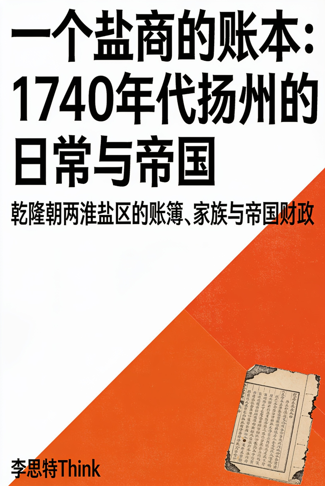
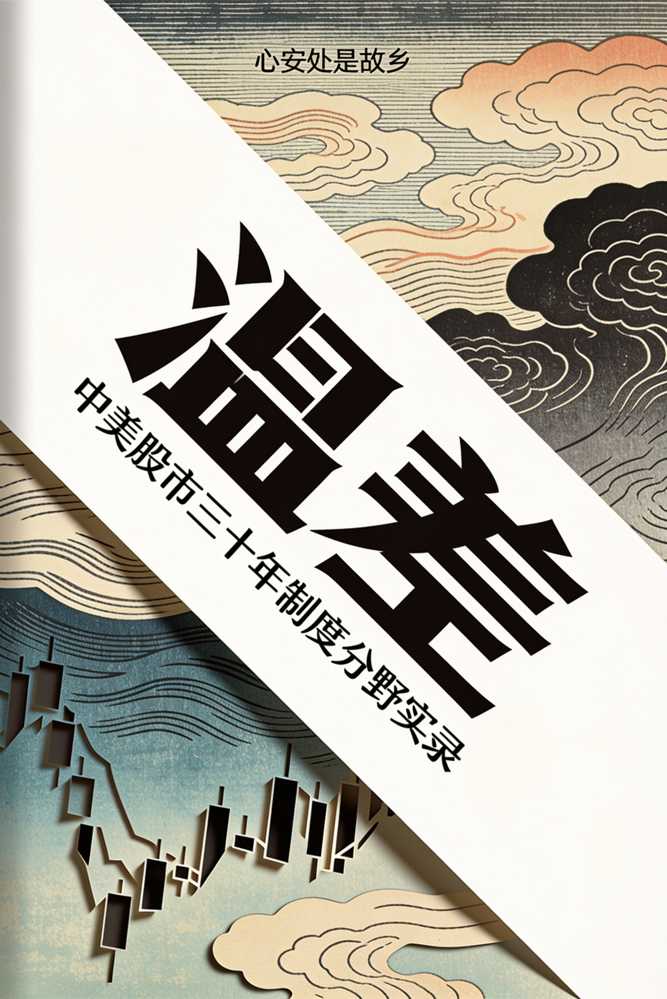
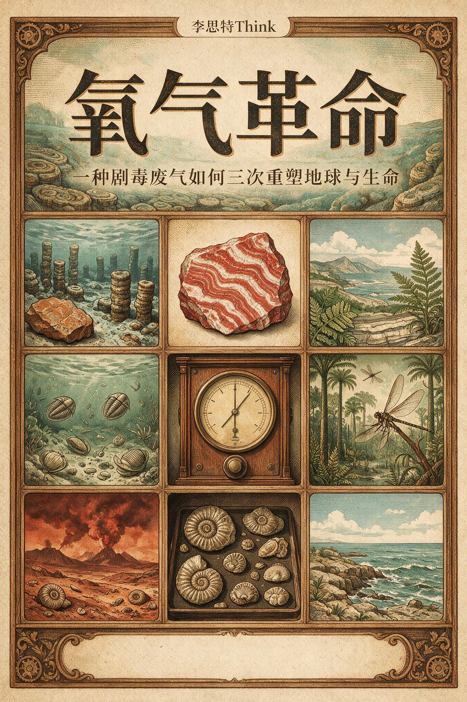
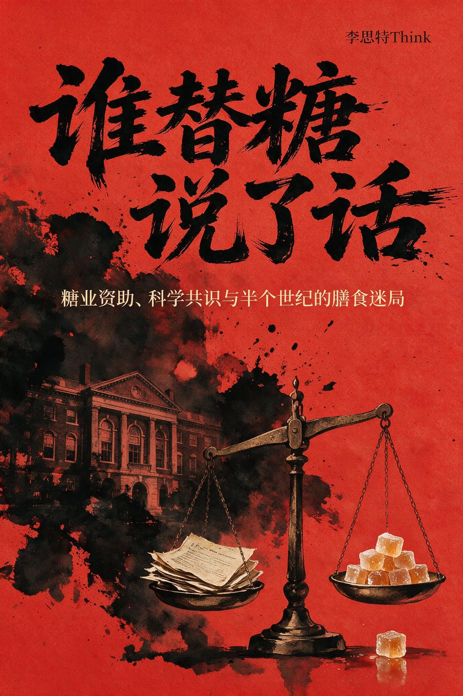
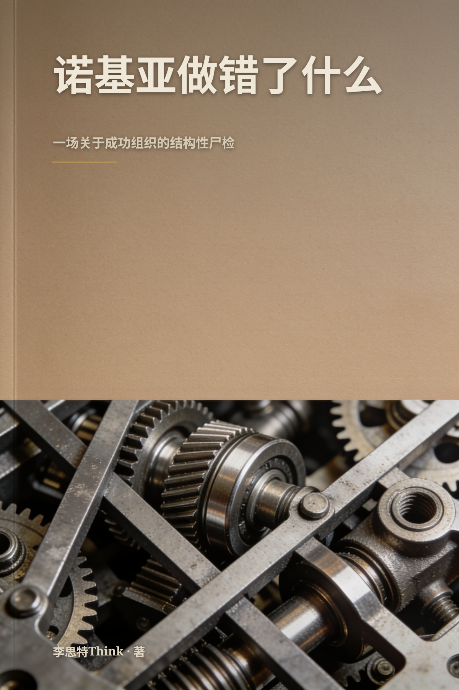

继续阅读
大家都在看
推荐阅读 · 按评分与新度挑选榜单








分类
查看全部 · 14 个分类搜索结果
全部作品

当世界失焦

看不见的引擎

第二十四颗卫星

习惯的复利：微小改变如何滚成大不同

氧气革命
The Great Stink: London in the Summer of 1858

谁替糖说了话

The Year Without a Summer: 1816 and the World Tambora Made

电池里的战争：动力电池的产业地图

慢决定

先别亏钱

诺基亚做错了什么

记忆的骗局

每天两小时

看不见的锋线

Why the Night Sky Is Dark

Sweet Empire: How Sugar Built and Broke the Modern World
The Rubber Century: How a Tree Sap Wired the Modern World
7.8开始阅读
一个盐商的账本：1740年代扬州的日常与帝国
雪线之下
汴京的最后十年
Small Levers: The Engineering of Everyday Change
县城的钱从哪来
8.5开始阅读